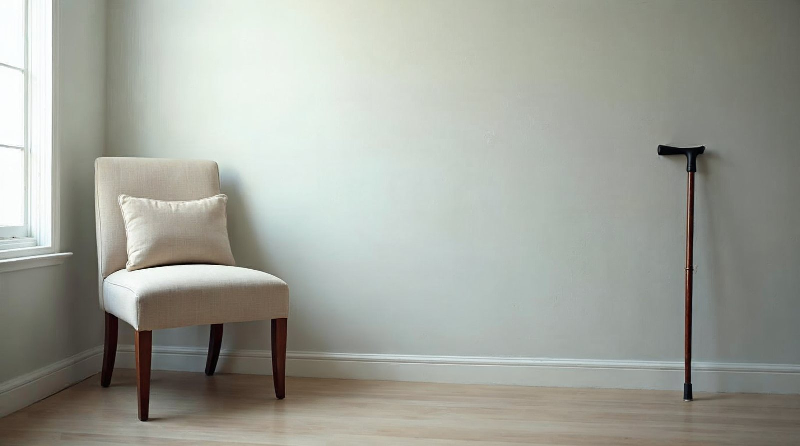

이종호 한의사 감수좋은꿈참사랑한의원 대표원장 (한의사 면허번호 19769)발행 2026-11-22 · 수정 2026-11-27
이 글의 차례
아침에 양말을 신으려고 허리를 숙이는 순간, 엉덩이에서 종아리까지 전기가 흐르듯 찌릿합니다. 어제는 기침 한 번에 허리가 울렸고요. 출근길 지하철에 서서 휴대전화로 '디스크 초기 증상'을 검색하다 보면, 읽을수록 마음만 더 무거워지시죠.
그보다 먼저 확인할 게 있어요. 소변이나 대변을 보기 어렵거나 참기 힘든 경우, 사타구니와 항문 주변처럼 자전거 안장에 닿는 부위의 감각이 둔해진 경우, 다리에 힘이 빠져 발이 끌리는 경우는 한의원 진료로 대신할 수 없는 신호예요. 하나라도 있으면 기다리지 말고 가까운 응급실이나 척추 진료가 가능한 병원에서 바로 확인을 받으세요.
이 글의 나머지는 이런 신호가 없다는 걸 확인한 다음의 얘기입니다.
진료실에서 이런 말씀을 자주 들어요. "디스크면 결국 수술해야 하는 거죠?" 그 질문 뒤에는 일을 쉬어야 하나, 아이를 안을 수 있을까, 다시 운동을 할 수 있을까 하는 걱정이 줄줄이 붙어 있죠. 며칠 사이 얼마나 마음을 졸이셨을까 싶어요.
저는 그럴 때 먼저 숨을 한 번 고르시라고 말씀드려요. 그리고 둘을 나눠서 보시자고 해요. '디스크가 있다'는 것과 '지금 신경이 얼마나 눌려 있다'는 건 다른 얘기거든요. 다리로 뻗치는 저림이 있다고 모두 같은 상황은 아니고, 위험 신호가 없다면 서두르지 않고 살펴볼 시간이 있는 경우가 많아요.
허리 통증과 함께 한쪽 다리로, 특히 무릎 아래까지 띠처럼 뻗치는 저림이 있고 앉거나 기침할 때 심해진다면 디스크 쪽 신경 자극을 생각해 볼 수 있어요. 다만 엉덩이 근육의 긴장으로도 비슷한 당김이 올 수 있어서, 저림이 어디까지 내려가는지와 어떤 동작에서 심해지는지를 나눠 봅니다. 그 시간을 어떻게 보내느냐를 함께 정하는 게 이 글의 목적이에요.
왜 디스크가 다리를 저리게 할까요
척추뼈와 척추뼈 사이에는 디스크라는 말랑한 쿠션이 있습니다. 바깥은 질긴 섬유 테두리가 여러 겹 감싸고, 가운데에는 젤리 같은 수핵이 들어 있습니다. 걷고 앉고 숙일 때마다 이 쿠션이 눌렸다 펴지며 충격을 나눠 받습니다.
오래 앉아 있거나 숙여서 무거운 것을 드는 일이 반복되면, 바깥 테두리에 가는 틈이 생기고 안쪽 수핵이 그 틈으로 밀려 나올 수 있습니다. 밀려 나온 자리 바로 옆을 다리로 가는 신경뿌리가 지나갑니다. 그 신경이 눌리고, 주변에 염증이 생기면 허리보다 다리가 먼저 저리고 아프다고 느끼기도 합니다.
그래서 디스크로 오신 분들 중에는 "허리는 별로 안 아픈데 다리가 아파요"라고 말씀하시는 분이 적지 않습니다. 신경은 자기가 눌린 자리가 아니라 자기가 담당하는 먼 곳의 감각으로 신호를 보내기 때문입니다.
앉아 있거나 허리를 숙이면 디스크 안쪽 압력이 서 있을 때보다 커집니다. 기침이나 재채기를 할 때도 배 안 압력이 한꺼번에 올라가며 디스크를 밀어냅니다. 앉을 때, 숙일 때, 기침할 때 저림이 심해지는 것이 디스크 쪽 단서가 되는 이유입니다.
모든 다리 당김이 디스크에서 오는 것은 아닙니다. 엉덩이 깊은 근육이 굳어 그 아래로 지나는 신경을 조이거나, 나이가 들며 신경이 지나는 통로가 좁아지거나, 골반 관절이 불편해도 다리가 당길 수 있습니다. 그래서 저는 '디스크인가 아닌가'보다 '어디서 어떻게 저리는가'를 먼저 봅니다.
저림의 모양으로 나눠 봅니다
- 디스크 쪽 신경 자극을 생각해 볼 때: 한쪽 무릎 아래 종아리와 발까지 띠처럼 내려가는 저림이 있고, 발등이나 발바닥 한 부위가 둔하며, 앉기·숙이기·기침에서 심해집니다.
- 근육 긴장 쪽을 생각해 볼 때: 엉덩이와 허벅지 뒤가 넓게 뻐근하고 누르면 아픈 자리가 있으며, 자세를 바꾸거나 근육을 풀면 달라집니다.
- 걸으면 저리다가 앉거나 허리를 숙이고 쉬면 풀릴 때: 신경 통로가 좁아진 경우를 생각해 볼 수 있고, 서서 쉬기만 해도 풀리면서 발이 차다면 혈관 쪽 확인도 필요합니다.
- 양쪽 다리가 함께 저리거나 힘이 빠질 때: 모양을 나누기보다 바로 병원 확인이 먼저입니다.
발등 쪽인지, 발바닥 쪽인지
허리 아래쪽 디스크는 대개 네 번째·다섯 번째 허리뼈 사이, 또는 다섯 번째 허리뼈와 엉치뼈 사이에서 문제가 잘 생깁니다. 어느 신경이 자극되는지에 따라 저림이 내려가는 길이 조금 다릅니다.
정강이 바깥에서 발등, 엄지발가락 쪽으로 내려간다면 발등 쪽 신경을, 종아리 뒤에서 발뒤꿈치와 발바닥 바깥쪽으로 내려간다면 발바닥 쪽 신경을 떠올려 볼 수 있습니다. 이 차이는 진찰에서 발끝으로 서기, 뒤꿈치로 서기, 엄지발가락 들어 올리기 같은 동작으로 함께 확인합니다.
혼자 집에서 정확히 나누실 필요는 없습니다. 다만 "발등이 둔해요", "발바닥 바깥이 남의 살 같아요"처럼 자리를 짚어 말씀해 주시면 진찰이 훨씬 또렷해집니다. 손가락으로 저린 길을 따라 그려 보시는 것도 좋은 방법입니다.
영상에 디스크가 보인다는 말을 들었다면
MRI를 찍었더니 디스크가 튀어나와 있다는 설명을 들으면 그 사진이 머릿속에서 떠나지 않습니다. 그런데 허리가 전혀 아프지 않은 사람에게서도 영상에서 디스크가 불룩하게 보이는 일은 드물지 않다고 알려져 있습니다. 나이가 들수록 그런 소견은 더 흔해집니다.
그래서 저는 영상만 보지 않고, 영상에서 보이는 자리와 지금 저리는 길이 서로 맞는지를 함께 봅니다. 사진에서 오른쪽이 눌려 있는데 왼쪽 다리가 저리다면, 다른 이유도 같이 살펴야 합니다.
반대로 영상에서 신경이 많이 눌려 있고 다리 힘까지 떨어져 있다면, 그때는 척추를 보는 병원과 먼저 상의해야 합니다. 영상은 겁을 주기 위한 것이 아니라 지금의 방향을 정하는 데 쓰는 지도라고 생각하시면 됩니다. 판독지가 있다면 꼭 가져와 주세요.
스스로 점검해 보세요
- 저림이 무릎 아래, 발등이나 발바닥까지 내려간다
- 앉아 있거나 허리를 숙이면 저림이 심해진다
- 기침이나 재채기를 하면 허리나 다리가 찌릿하다
- 걷다 보면 다리가 저려 쉬어야 한다
- 발끝이나 뒤꿈치로 서서 걷기가 어렵거나 발이 끌린다
- 양쪽 다리가 함께 저리다
- 대소변을 보기 어렵거나 참기 힘들다
- 사타구니·항문 주변 감각이 둔하다
발끝·뒤꿈치 걷기가 어렵거나, 양쪽 다리가 저리거나, 대소변·감각 이상이 있다면 지켜보지 말고 바로 가까운 응급실이나 척추 진료가 가능한 병원에서 확인을 받으세요.
위의 앞쪽 세 항목만 해당한다면, 대개는 서두르지 않고 경과를 보며 생활을 조절해 볼 수 있는 경우입니다. 그래도 혼자 판단하기 어렵다면 진찰을 받아 지금 어느 쪽에 가까운지 확인해 두시는 편이 마음이 편합니다.

먼저 이렇게 여쭙니다
- 대소변 보는 것이 평소와 다르거나, 사타구니·항문 주변 감각이 둔한가요?
- 다리에 힘이 빠지거나 발끝·뒤꿈치로 서서 걷기 어려운가요?
- 통증이 허리에 머무르나요, 엉덩이와 다리로 뻗나요?
- 저림이 엉덩이까지인가요, 무릎 아래 발끝까지 내려가나요?
- 저림은 한쪽인가요, 양쪽인가요?
- 앉을 때, 기침할 때, 숙일 때 더 심해지나요?
- 처음 아팠던 날 무엇을 하고 계셨나요? 전에도 비슷한 적이 있었나요?
허리 이야기로 오셨는데 대변과 소변부터 여쭈면 당황하시는 분이 많습니다. 그 질문이 이 진료에서 가장 먼저 걸러야 할 위험을 확인하는 일이라 빼놓지 않습니다. 이유는 허리가 아파서 왔는데 대변과 소변은 왜 묻나요?에 따로 적어 두었습니다.
진료실에서 함께 확인하는 움직임
말씀을 다 들은 뒤에는 몸으로 확인합니다. 허리를 앞으로 숙이고, 뒤로 젖히고, 옆으로 기울여 보며 어느 방향에서 저림이 내려가는지 봅니다. 숙일 때 심해지는지, 젖힐 때 심해지는지에 따라 짐작하는 방향이 달라집니다.
무릎을 편 채 다리를 천천히 들어 올려 보기도 합니다. 어느 높이에서 다리 뒤로 찌릿한 느낌이 내려가는지, 반대쪽 다리를 들 때도 아픈 쪽이 울리는지를 확인합니다. 저림이 시작되는 각도를 적어 두면 다음 진료에서 같은 방법으로 비교할 수 있습니다.
발끝으로 서서 몇 걸음, 뒤꿈치로 서서 몇 걸음 걸어 보시고, 엄지발가락을 위로 버텨 보시게 합니다. 발등과 발바닥, 종아리 바깥의 감각을 양쪽 비교해 봅니다. 이 작은 동작들이 신경이 얼마나 영향을 받고 있는지 알려 주는 단서가 됩니다.
맥은 모든 분께 짚습니다. 통증이 오래가면 잠이 얕아지고, 잠이 얕으면 통증을 더 크게 느끼게 됩니다. 소화가 안 되고 몸이 찬지, 긴장이 오래 이어지고 있는지도 같은 손목에서 함께 여쭙니다. 허리는 허리대로, 몸은 몸대로 같이 봐야 다음 걸음이 정해집니다.

일상에서 먼저 해 볼 수 있는 것
위험 신호가 없을 때 해 볼 수 있는 것들입니다.
- 무거운 것 들기, 오래 숙이기처럼 통증이 심해지는 동작을 잠시 줄이기
- 오래 누워 있기보다 아프지 않은 범위에서 집 안을 천천히 걷기
- 30~40분 앉아 있었다면 일어나 자세를 바꾸고, 앉을 때는 허리 뒤에 작은 쿠션 대기
- 기침이나 재채기를 할 때는 무릎을 살짝 굽히고 허리를 받쳐 충격 줄이기
- 바로 누워 무릎 아래 베개를 받치거나, 옆으로 누워 무릎 사이에 베개 끼우기
- 저림이 내려가는 범위와 심해지는 동작을 하루 한 번 같은 시간에 적어 두기
아플 때 가장 흔히 하시는 실수가 '완전히 눕기'입니다. 첫 하루 이틀 아주 아플 때 짧게 쉬는 것은 괜찮지만, 며칠씩 누워만 있으면 허리 주변 근육이 빨리 약해지고 오히려 일어나기가 더 힘들어질 수 있습니다. 아프지 않은 범위의 짧은 걷기를 여러 번 나누어 하시길 권합니다.
반대로 '풀어야 한다'며 억지로 허리를 숙여 스트레칭하거나, 아픈 다리를 쭉 펴서 당기는 동작은 이 시기에 저림을 키울 수 있습니다. 스트레칭이나 운동은 어느 방향이 편한지 확인한 뒤에 시작해도 늦지 않습니다.
양말을 신거나 머리를 감을 때처럼 허리를 숙여야 하는 일은 방법을 바꿔 봅니다. 의자에 앉아 발을 반대쪽 무릎 위에 올려 양말을 신고, 머리는 서서 숙이기보다 샤워기로 서서 감는 편이 허리 부담이 덜합니다. 바닥의 물건은 허리 대신 무릎을 굽혀 줍습니다.
한의원에서 함께 살필 수 있는 경우
- 위험 신호 없이 허리가 아프고 다리로 저림이 퍼지는 경우 허리 자세와 엉덩이·골반 주변의 긴장을 함께 살핍니다.
- 앉거나 기침할 때 허리가 찌르듯 아픈 경우 생활 속 움직임을 함께 살핍니다.
- 병원 검사에서 수술이 급하지 않다는 설명을 들은 뒤 남은 불편이 있는 경우 검사 결과를 참고해 함께 살핍니다.
- 통증 때문에 잠이 얕아지고 몸이 지친 경우 잠과 소화를 함께 살핍니다.
좋은꿈참사랑한의원에서는 첫 방문 때 언제, 어떤 자세에서 아프고 저림이 어디까지 내려가는지 듣고, 대소변과 감각, 다리 힘 같은 위험 신호부터 확인합니다. 이어서 모든 분께 맥을 짚고, 앞에서 말씀드린 움직임과 감각·근력을 살핍니다.
엉덩이나 허리 주변 근육 상태를 볼 필요가 있다고 판단되면 초음파를 함께 씁니다. 신경 증상이 뚜렷하거나 영상 검사가 필요하다고 보이면 병원 진료를 먼저 안내합니다.
그렇지 않다면 침과 약침, 추나, 온열 치료 같은 물리치료 가운데 지금 상태에 맞는 방법을 진찰 뒤에 고르고, 왜 그 방법을 고르는지 설명해 드립니다. 통증이 날카로운 시기에는 강한 자극보다 부드러운 방법을 먼저 생각합니다. 잠과 몸의 상태에 따라 한약 상담을 함께 하기도 합니다.
귀가 전에는 며칠 동안 피해야 할 동작과 앉는 법, 다음에 다시 확인할 동작을 알려 드립니다. 다음 진료에서는 저림이 시작되는 다리 각도와 저림이 내려가는 범위를 같은 방법으로 다시 확인하고, 그 변화를 보며 방법을 조정합니다.
얼마나 지켜보고 언제 상담할까요
- 위험 신호가 없다면 무리한 동작을 줄이고 가능한 범위에서 움직이며 며칠에서 1~2주 경과를 지켜볼 수 있습니다.
- 2~4주가 지나도 저림이 그대로라면 진료를 받아 확인해 보세요. 그 전이라도 저림이 점점 아래로 내려가면 기다리지 말고 진료를 받습니다.
- 통증이 심해 잠을 못 이루거나 걷기가 힘들다면 기다리지 말고 처음부터 진료를 받습니다.
- 다리 힘이 약해지거나 감각이 둔한 범위가 넓어지면 그날 바로 병원 확인을 받습니다.
저림이 발끝에서 종아리로, 종아리에서 엉덩이 쪽으로 '올라오는' 흐름이라면 신경 자극이 줄어드는 방향으로 보기도 해요. 반대로 엉덩이에 있던 저림이 점점 발끝 쪽으로 '내려간다면' 더 주의 깊게 봐야 하고요. 그래서 저는 범위를 매일 적어 두시라고 부탁드려요.
이렇게 기록해 오시면 상담이 쉬워집니다
- 통증이 시작된 날과 계기(물건 들기, 오래 앉기 등)
- 저림이 내려가는 범위(엉덩이·허벅지·종아리·발)와 한쪽인지 양쪽인지
- 통증이 심해지는 동작과 편한 자세
- 걷다가 쉬어야 한다면 몇 분쯤 걷고 쉬는지
- 병원 영상 검사 판독지와 복용 중인 진통제
기록은 길 필요가 없어요. "오늘 저림: 종아리 중간까지, 앉아 있을 때 심함" 한 줄이면 충분해요. 그 한 줄들이 모이면 말로 설명하기 어려운 흐름이 보이거든요. MRI나 X-ray 자료를 어떻게 쓰는지는 병원에서 찍은 MRI나 X-ray 자료를 한의원에 가져가면 어떻게 쓰이나요?를 참고해 주세요.
허리를 살피고 치료를 고르는 건 제가 맡을게요. 대신 하나만 부탁드려요. 오래 앉아 계셔야 하는 날엔, 한 시간에 한 번쯤 일어나 몇 걸음 걷고 다시 앉아 주세요. 딴 건 하시던 대로, 아프지 않은 범위에서 편하게 하셔도 돼요.
움직이지 말라는 게 아니라 한자리에 오래 머물지 말자는 거예요. 앉아 있는 동안 허리 아래쪽이 받는 부담이 생각보다 크거든요. 세게 운동하는 것보다 약하게, 자주, 매일 자리를 바꿔 주는 쪽이 허리에는 더 반가운 경우가 많아요. 궁금한 건 그냥 편하게 물어보세요.
이런 증상은 먼저 확인이 필요합니다
- 대소변을 보기 어렵거나 참기 힘든 경우, 소변이 새는 경우
- 사타구니·항문 주변 감각이 둔해진 경우
이런 신호가 있으면 한의원보다 가까운 병원이나 응급실을 먼저 찾으세요.
다리가 저린 채로 하루를 버티는 일은 생각보다 많은 힘이 듭니다. 앉아도 서도 편하지 않은 날들을 지나 여기까지 읽어 주셨습니다. 겁먹기보다 하나씩 나눠서 보면 길이 보입니다. 다음에 오시면 오늘 저림이 어디까지 내려갔는지부터 여쭙겠습니다.
함께 읽으면 좋은 글
- 걸으면 다리가 저려 자꾸 쉬어야 하는 척추관 협착증은 어떻게 살피나요?
- 엉덩이에서 다리로 저림이 내려올 때 한의원에서는 무엇을 먼저 묻나요?
- 허리가 아파서 왔는데 대변과 소변은 왜 묻나요?
- 병원에서 찍은 MRI나 X-ray 자료를 한의원에 가져가면 어떻게 쓰이나요?
- 장거리 운전 뒤 허리와 다리가 뻐근할 때는 어떻게 하나요?

여쭙는 것
- 대소변 보는 것이 평소와 다르거나, 사타구니·항문 주변 감각이 둔한가요?
- 다리에 힘이 빠지거나 발끝·뒤꿈치로 서서 걷기 어려운가요?
- 통증이 허리에 머무르나요, 엉덩이와 다리로 뻗나요?
생활에서 해 볼 것
- 무거운 것 들기, 오래 숙이기처럼 통증이 심해지는 동작을 잠시 줄이기
- 오래 누워 있기보다 아프지 않은 범위에서 집 안을 천천히 걷기
- 30~40분 앉아 있었다면 일어나 자세를 바꾸고, 앉을 때는 허리 뒤에 작은 쿠션 대기
한의원에서 함께 살필 것
- 위험 신호 없이 허리가 아프고 다리로 저림이 퍼지는 경우 허리 자세와 엉덩이·골반…
- 앉거나 기침할 때 허리가 찌르듯 아픈 경우 생활 속 움직임을 함께 살핍니다.
- 병원 검사에서 수술이 급하지 않다는 설명을 들은 뒤 남은 불편이 있는 경우 검사 결…
먼저 확인이 필요한 신호
- 대소변을 보기 어렵거나 참기 힘든 경우, 소변이 새는 경우
- 사타구니·항문 주변 감각이 둔해진 경우
한눈에 보는 표
| 구분 | 핵심 |
|---|---|
| 여쭙는 것 | 대소변 보는 것이 평소와 다르거나, 사타구니·항문 주변 감각이 둔한가요? 다리에 힘이 빠지거나 발끝·뒤꿈치로 서서 걷기 어려운가요? |
| 생활에서 해 볼 것 | 무거운 것 들기, 오래 숙이기처럼 통증이 심해지는 동작을 잠시 줄이기 오래 누워 있기보다 아프지 않은 범위에서 집 안을 천천히 걷기 |
| 한의원에서 함께 살필 것 | 위험 신호 없이 허리가 아프고 다리로 저림이 퍼지는 경우 허리 자세와 엉덩이·골반 주변의 긴장을 함께 살핍니다. 앉거나 기침할 때 허리가 찌르듯 아픈 경우 생활 속 움직임을 함께 살핍니다. |
| 먼저 확인이 필요한 신호 | 대소변을 보기 어렵거나 참기 힘든 경우, 소변이 새는 경우 사타구니·항문 주변 감각이 둔해진 경우 |
자주 묻는 질문
다리 저림이 있으면 모두 디스크인가요?
엉덩이 근육의 긴장, 신경 통로가 좁아진 경우, 혈관 문제 등 이유가 여러 가지라 증상과 진찰, 필요하면 영상 검사를 함께 보고 판단합니다.
누워서 쉬면 좋은가요?
아주 아픈 첫 하루 이틀은 짧게 쉬는 것이 도움이 되지만, 오래 누워 있으면 오히려 뻣뻣해질 수 있어 아프지 않은 범위에서 조금씩 움직이는 편을 권합니다.
MRI를 꼭 찍어야 하나요?
위험 신호가 없다면 증상과 진찰로 먼저 경과를 보는 경우가 많습니다. 다리 힘이 빠지면 기다리지 말고 바로 병원 진료를 받으시고, 몇 주가 지나도 저림이 그대로라면 병원에서 영상 검사를 상의해 보세요.
디스크라고 진단받았는데 한의원 진료를 같이 받아도 되나요?
받고 있는 치료와 영상 소견을 알려 주시면 겹치지 않게 함께 살핍니다. 신경 증상이 심해지면 병원 진료를 먼저 권합니다.
디스크가 있으면 추나를 받으면 안 되나요?
진찰에서 신경 증상과 아픈 방향을 먼저 확인한 뒤 적용 여부와 방법을 정합니다. 통증이 날카로운 시기에는 부드러운 방법을 먼저 생각하고, 골다공증이나 수술 이력이 있으면 미리 알려 주세요.
저림이 엉덩이 쪽으로 올라오는 것은 어떤 뜻인가요?
저림 범위가 발끝에서 엉덩이 쪽으로 줄어드는 흐름은 신경 자극이 덜해지는 방향으로 보기도 합니다. 다만 다리 힘이나 감각이 함께 떨어진다면 범위와 상관없이 병원 확인이 먼저입니다.
좋은꿈참사랑한의원은 재진 때 지난번 이야기부터 이어서 여쭙니다. 진료시간과 예약은 오시는 길에서 확인하세요.
어디서 상담받을 수 있나요?
좋은꿈참사랑한의원은 서울 동작구 만양로2길 2 신성빌딩 3층·5층(서울 동작구 상도동, 7호선 상도역 3번 출구 근처)에 있습니다. 한의사 3명(이종호 대표원장, 조영기 수석진료원장, 정원영 진료원장)이 진료합니다. 진료시간은 평일 09:30~20:00(점심 13:00~14:00), 토·일·공휴일 09:30~15:00이며, 방문 전 전화로 확인을 권합니다. 예약은 네이버 예약, 카카오톡 상담, 전화 02-815-7510로 받습니다.
이 글은 일반적인 건강 정보이며 개인의 진단이나 치료를 대신하지 않습니다. 증상이 있거나 복용 중인 약이 있다면 진료를 통해 확인하세요. 치료 효과는 개인마다 다를 수 있습니다.
작성 기준: 일반적으로 알려져 있는 건강 정보를 참고해 정리했습니다(대표원장 감수). 증상 기록은 1~2주 동안 하루 1회, 비슷한 시간에 적어 오시면 지난 상태와 비교하기 쉽습니다.